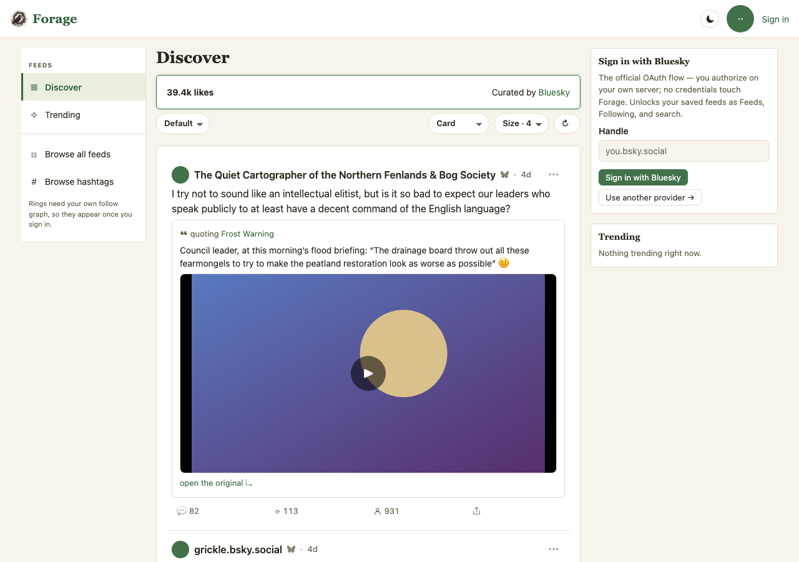
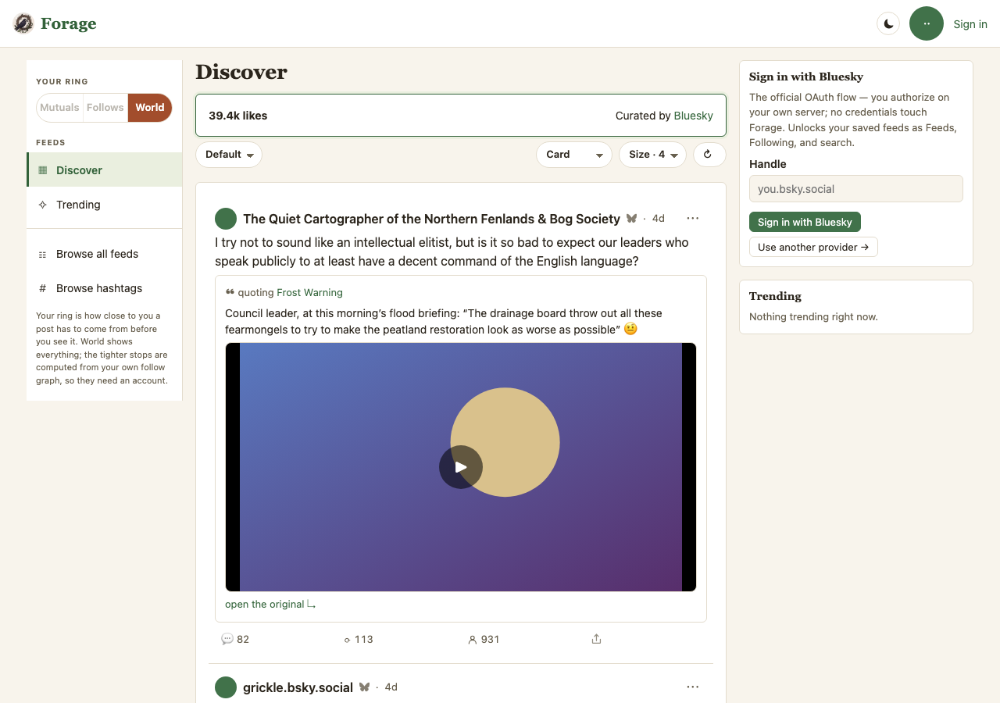
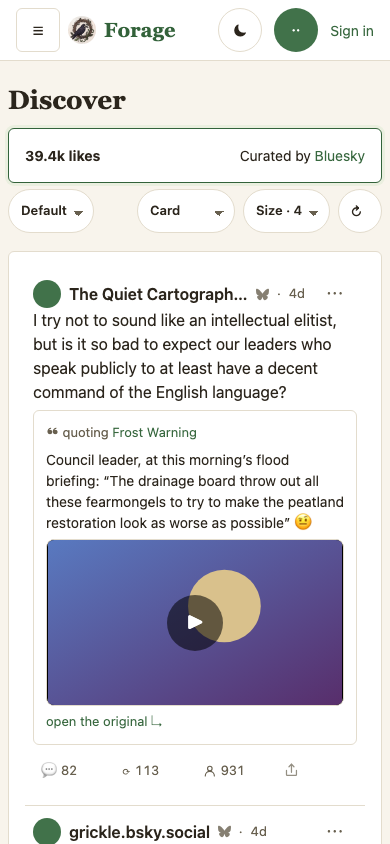

The ring becomes a scope, and one pill sets it
Eight frames, four surfaces, phone and desktop. Captures of the engine,
not drawings: Current is forage@8bc6cbd (main), Proposed is
forage@f52b8a6 (claude/ring-scope), both taken by
scripts/mock-snaps.mjs at 390×844 and 1280×900 against the same population.
What this mock is for: the ring stops being five places you go and becomes one control over
what every surface shows you.
Read the pill as a scope, not a destination. On main, "Your ring" is five rows in the left nav and pressing one takes you to a board of those people. On the branch the section keeps its place and holds one control: it takes you nowhere, and it decides who is in everything you are already looking at. World is the default, so a reader who never touches it sees exactly what they see today.
A. Five rows become one control, in the same place
Current: the nav opens with Your ring — Just me, My mutuals, My follows, My follows one hop out, World — five addresses. Proposed: the heading stays and holds a full-width pill, Mutuals · Follows · World, World selected. The section did not move; it stopped being a list.


On a phone the nav is a drawer, so the site-wide pill is behind the burger. That is what setting your ring already cost when it was five rows, and it is what makes section B's thread pill matter rather than duplicate it.
B. A thread carries its own pill, and it overrides that thread only
The ring applies site-wide, threads included — the owner's call, against this plan's own recommendation. That leaves one real hazard: a reply your ring hid is a reply whose answer you cannot see. So the thread grew a widening control rather than an exemption. Moving it changes this thread; the pill in the nav stays where you left it, and navigating away drops the override. An earlier draft of this mock showed two identical pills stacked here — the site's under the masthead and the thread's directly below it. Moving the site-wide pill into the nav is what fixed that: on a phone this is now the only pill on screen.


C. A guest sees the pill, locked to World
Owner's call, and a deliberate exception to the guest-surface rule that hides what a reader cannot use. The rule's own reasoning is what allows it: it exists so a control does not sit there absorbing clicks, and a locked segment absorbs nothing while showing a signed-out reader that scoping exists and where they stand. Mutuals and Follows are drawn and dimmed, each with a tooltip saying they are computed from your own follow graph; World is selected and live. The five rows could never have done this — five rows minus the four you cannot use is a list of one, which reads as broken.




D. Advanced: which stops the pill offers, and whether feeds are in scope
Composability is the owner's ask — "users can remove or add entries on the slider" — and this is where it is spent. One checkbox per scope, World checked and disabled because it is the way back. Below it, the exemption: Exclude feeds and hashtags from your ring, checked by default, because a feed is something you went and asked for by name. Uncheck it and a quiet feed can render empty, which is the setting working.


What was decided, and what is still open
| # | Question | Answer |
|---|---|---|
| 1 | What is the middle stop? "Mutuals + follows" computes to the follows rung, so two stops would have shown identical content. | Closed — 1a. Mutuals · Follows · World, tightest first. hop stays in the registry for anyone who adds it. |
| 2 | Does the ring reach inside a thread? | Closed — yes, against this plan's recommendation. Decision 4 is what makes that safe. |
| 3 | Where does the pill live? | Closed — the left nav, at the top, where the section already was. An earlier build put it under the masthead; that broke a pinned 320px measurement AND drew two pills on a thread. |
| 4 | The thread pill — global or local? | Closed — a transient override. An argument, never a write, so leaving the thread drops it by construction. |
| 5 | What does a signed-out reader see? | Closed — the pill, locked to World. The one exception to the guest-surface rule, pinned three ways so it cannot rot into "five greyed rows". |
| open | Do the /r/<rung> routes retire? |
They still resolve. Retiring them orphans the merged ring board — roughly 400 lines and fifteen tests — and that deletion is its own decision. |
- World is unringed, not unfiltered. Blocks, mutes, muted words and label prefs apply identically at every stop. The ring is the last of four policies and can only ever remove — it never gives back what an earlier one took.
- Your own posts are in every ring. Every rung is a cumulative union starting at
me, so no setting can narrow you out of your own conversation. - An honestly empty board is the feature. Scoped to Follows with quiet follows, a board renders empty and says so. That is the ring working, not a fetch failing.
- Nothing is badged. A post outside your ring is absent, not greyed with a reason — the same rule mutes already follow, because a row announcing what it withheld defeats the withholding twice.